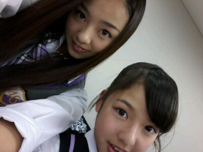

| 2012/07 08 Sun | 川村真洋 東京全国握手会☆ ろって ぃー, |
ほっほーい★!
ろってぃーでぇす´∇`*)/
皆様 ☆. * . 。゜*
今日も朝から晩まで１日,
おつかぁぁ〜〜 ... ?
ろってぃーーー★☆★!! )))
笑 笑
うーーいぇいっ^^♪にっ,
あ... ちょっと待ってくだちい。笑
ブログ書く前に
お風呂やー*´∇`*
...
戻って参りましたっ・∇・>
ただいま 朝の8時50分。☆
お風呂入った後、
爆睡かましてもぉたー 笑
ってブログじゃ
時間つたわらんけど...。♪
とりあえず,
日付変わって 続きのブログ
かき始めます*´ω`*
昨日は
東京幕張にて
全国 あくしゅかーーい★☆★
うーいぇいっ))
8000千人以上の方が
各地方から
集まってくれたどもぉー?
うれぴい過ぎるお気持ち〃¢〃
あっ、そーだ☆
(・¢・) 『 ¢ 』 ←これは
鼻ピのつもりだねん*´ω`*
顔文字やのに鼻ピとか
ちょっとかっこええでしょω
え... なんて?
んなことないやろ って?
昨日の写メ★

まあや♪が隣でおメイクしてる
ところ,
隣で写メってたら
入ってくれました*・ω・*
ありがと！
そして、昨日のミニライブ♪
始まる直前,
『今日すごいいっぱい
きてるくださってるよ〜,
何千人位♪』
ってゆう会話を近くで
聞いて,
『えっ！? ぢゃあ
2000人位きてくださってるの？!
やばいよ>< どーしよ
うわぁ〜 』
って思いながら
ステージに出て行って
皆様の方を見た瞬間。
『 ...え?
うぇい? ...
何ぢゃこりゃーーー!!!!!★☆★☆
多www すぎょーーいっ!・∇ 』
ってのがその時の心情です。☆
いぇいっ。
だって あんな奥の方まで見て
歌って踊ることができると
思ってなかったから
お目めさん♪の心臓が
ばくばくしてました*´∇｀*
本当に嬉しいですっ!
本当に本当に皆様のおかげ>_<
ありがとうございます*^^*
皆様大好きですっ〃¢〃
そして握手会^^
まひろ、せっちゃん、さゆりん
で3レーン☆にいました´∇`
すっっごい、たくさんの方が
握手会に来てくださって
いいーっぱい握手できて
すっごい嬉しかったです(⌒‐⌒)
楽し過ぎて,
メンバーやスタッフさんに
休憩時間中
『何でろってぃーは
そなに元気やぁー?』
って言われましたっ´∇`
やっほい♪
そりゃあ、体力は使うけど
楽しいからのぉ〜う *^^*)))笑
皆様 本当にありがとうございます(´∇`)ノシ
それと 今日の『乃木どこ?』に
まひろが出てるので
是非よければ見てください(⌒‐⌒)
んぢゃねっ*・ο・*のし